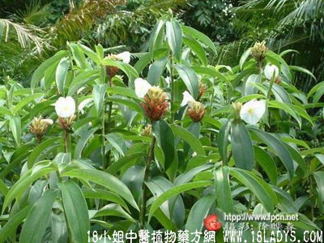

樟柳头(中药材植物名:闭鞘羌)(植物科目:襄荷科)

别名：广商陆、白石笋。
植物名：闭鞘羌。
生长环境：本品为高大草本。野生于热带地区山丘地。
分布：非洲、亚洲热带。美洲和我国广东、台湾均有产。
入药部分：根。
采集期：全年。
自采地点：山脚坑边。
性味：性微凉、味淡。
功能：利水去湿。
主治、用量和用法：1、百子痰，周身肿胀，配伍用；2、白浊，配伍用。
验方1（治百子痰方）：1、内服方：樟柳头1两、黄皮根5钱、鹰不泊5钱、天香炉5钱、白鹤藤5钱、寮刁竹3钱、清水四碗，煎成一碗服，儿童酌减。后用下方熏肛门。2、熏肛门方：樟柳头、鹰不泊、白鹤藤、菖蒲、假筠各5钱，清水煎后，趁热倾入痰盂，使病者坐痰盂上，熏肛门，如有出汗，用毛巾抹出汗。
（方解）百子痰乃痰湿肿胀之病，患者多为儿童，症状：身肿、腹胀、肚脐突起。作铡鱼口状。治疗宜用化气、利尿消肿法，本方樟柳头（白石笋）、天香炉利尿、黄皮根、寮刁竹化气，白鹤藤祛风，鹰不泊清热，合成消肿之方，以供内服。并外用白鹤藤、鹰不泊、白石笋、菖蒲、假筠煎水熏肛门，使药蒸气由肛而入助气行，同时又有发汗消肿作用。
（方歌）樟柳头疗百子痰，香炉石笋白鹤藤，刁竹黄皮鹰不泊，涤痰利尿肿即行，假筠石笋鹰不泊，煎水熏肛效入神。
验方2（治白浊方）：樟柳头1两、塘边藕5钱、金针头5钱、田贯草5钱、猪瘦肉适量、清水四碗，煎成一碗服。
（方解）本方樟柳头、塘边藕、金针头、田贯草，具有清热、解毒、利尿、毒从尿出，淋浊自愈。
（方歌）白浊频流痛不休，樟柳金针两用头，塘边藕合田贯草，瘦肉同煲服即愈。